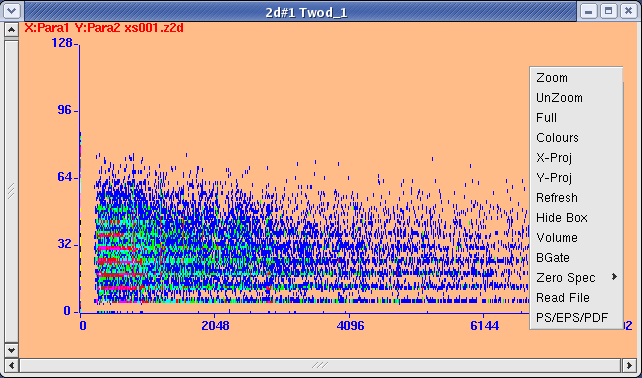

To mark a rectangular region, click and drag the mouse. As the mouse is moved, the Channel number (Calibrated value) and Counts are displayed. As with the 1d spectra, mark the region first and then operate upon it (Zoom, Volume etc.). After Zoom one can backtrack with UnZoom and Full. The marked box is initially "soft" (erased by dragging other windows over it) but become "hard" on the next refresh (either by Auto Refresh when acquisition is on, or by manual refresh). To get rid of the "soft" box it is enough to just click anywhere in the spectrum, then on the next refresh the "hard" box will also disappear. To get rid of the "hard" box in one step use the "Hide Box" function.
The other context menu functions Scale, XProj/YProj, Volume, BGate, Zero Spec, Read File, PS/EPS/PDF, are explained in subsequent sections.